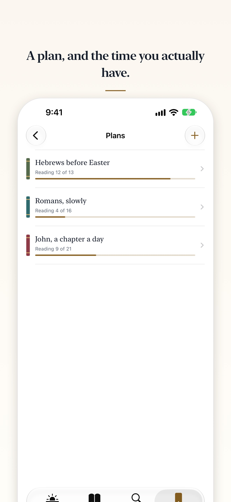

Reading the Bible in a year
The whole Bible is 1,189 chapters. Spread across a year, that is three or four a day. Here is how the arithmetic works, how to keep going when a week slips, and how to do it in Lamp & Line.
The arithmetic
1,189 divided by 365 is about 3.26. So a year is 365 readings of three or four chapters: 271 of three and 94 of four. Three a day, every day, would take 397 days; four a day would finish in 298, a little under ten months.
In the Berean Standard Bible that is about 725,000 words, or about 2,000 a reading: for most people, a quarter of an hour or less.
Chapters are not all the same length. Psalm 117 has two verses; Psalm 119 has 176, and Numbers 7 has 89. A plan divided by chapters has short days and long ones, and that is fine.
Straight through, or side by side
Genesis to Revelation, in order, is the plainest way. The Old Testament is 929 of the 1,189 chapters, so reading in order you reach Matthew about four-fifths of the way through: reading 286 of 365.
If you would rather keep the Old and New Testaments together, read two plans at once: the Old Testament in 365 readings of two or three chapters, and the New Testament a chapter at a time, which finishes first.
When you miss a day
Many printed plans are dated: 1 January is Genesis 1–3, and so on. Miss a week and you are more than twenty chapters behind, with the choice of reading double to catch up or skipping what you missed.
A plan with no dates keeps an order and nothing else. The next reading is simply the first one you have not marked read. Miss a week and it is exactly where you left it: nothing to catch up on, nothing broken. “In a year” then describes the size of each reading, not a deadline. If you want to finish by a particular day, read two on the days you can.
- Tie the reading to something you already do every day, at the same time.
- A reminder helps. Lamp & Line offers one a day, at a time you choose, or none at all.
- After a gap, do not start again from Genesis. Pick up at the next reading.
- Some stretches are slow going: the laws of Leviticus, the census lists in Numbers, the genealogies that open 1 Chronicles. Read them at the same pace and keep going.

How to do it in Lamp & Line today
Every plan in Lamp & Line is undated in exactly this way, and the whole Bible in a year is one of its two free plans: 365 readings of three or four chapters. The other is the New Testament, about three chapters at a time.
- Open Lamp & Line. If you have no plan yet, Today asks “Where to begin?” beneath the day’s prayer.
- Tap The Whole Bible in a Year. Your first reading is Genesis 1–4.
If you answered “Not now”, start it any time in Library › Plans.
Your next reading then sits on Today, beneath the day’s Psalm, reading and prayer. Open it from there, and the foot of its last chapter offers Mark reading as read, then the next reading. Everything is in the Berean Standard Bible, offline: see the BSB in Lamp & Line.
Rather listen? Read aloud, in the reader’s toolbar, reads the chapter with your device’s own voice and turns the page as it goes. It is free, and it works offline.
A pace of your own, any part of the Bible, and more than one plan at a time are part of Lamp & Line Full, one purchase that is never a subscription.
Start a plan that waits for you
Lamp & Line is free for iPhone and iPad, with Today on Apple Watch. No account, no ads, nothing collected.